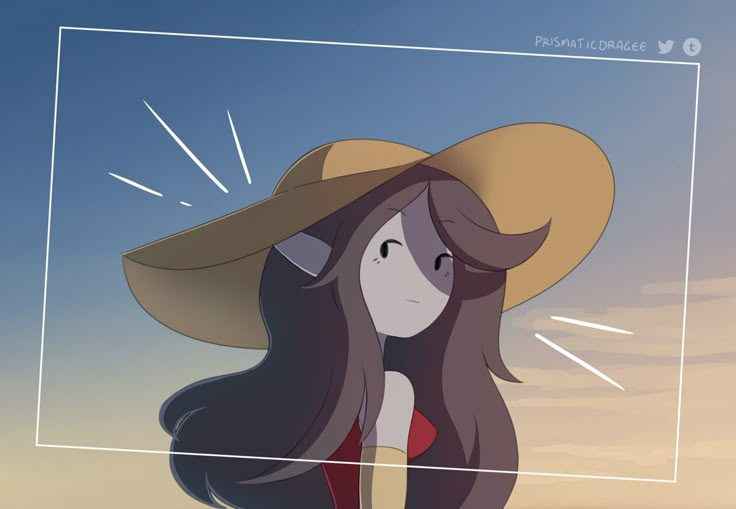
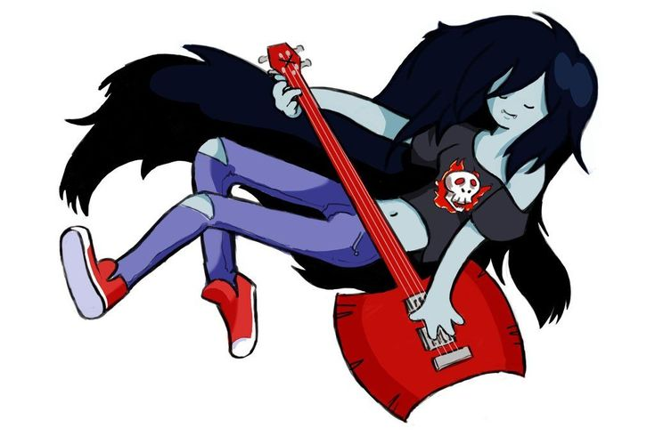

Marceline Abadeer: O Reino da Música e da Aventura
Galeria de Imagens da Marceline
Marceline com seu ursinho Hambo.Marceline em estilo chibi segurando Hambo.Marceline curiosa com uma flor: "Posso comer?".Marceline relaxando e tocando seu baixo.Marceline no palco, com sua energia vampírica.Marceline levitando sob um céu ao pôr do sol.Marceline abraçando Hambo, mostrando seu lado fofo.Marceline expressando seu amor com um coração quebrado.

Marceline sob o sol, protegida por um chapéu.

Marceline mostrando sua atitude rock 'n' roll.